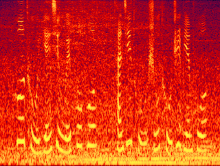
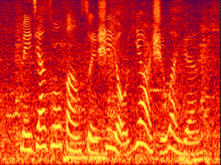
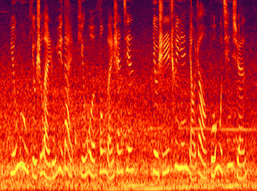
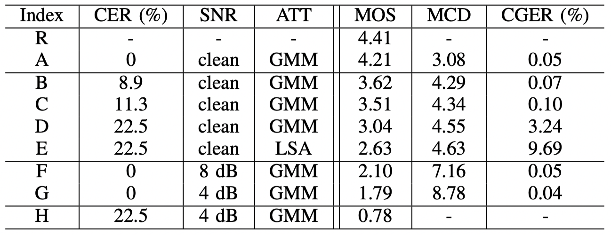
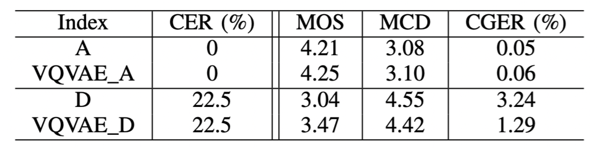

Audio samples for "Sequence-to-sequence based Speech Synthesis for Noisy Found Data with Adversarial Feature Learning and Unsupervised Clustering"
Authors: Shan Yang, Yuxuan Wang, Lei Xie
Abstract: Attention-based sequence-to-sequence (seq2seq) speech synthesis has achieved extraordinary performance. But a studio-quality corpus with manual transcription is necessary to train such seq2seq systems. In this paper, we propose an approach to build high-quality and stable seq2seq based speech synthesis system using challenging found data, where training speech contains noisy interferences (speech-side noise) and texts are imperfect speech recognition transcripts (text-side noise). To deal with text-side noise, we propose a VQVAE based heuristic method to compensate the erroneous linguistic feature with phonetic information learned directly from speech. As for the speech-side noise, we propose to learn a noise-independent feature in the auto-regressive decoder through adversarial training and data augmentation, which does not need an extra speech enhancement model. Experiments show the effectiveness of the proposed approaches in dealing with text-side and speech-side noise. Surpassing the denoising approach based on a state-of-the-art speech enhancement model, our system built on noisy found data can synthesize clean and high-quality speech with MOS close to the system built on the clean counterpart.
1. Examples of 4 dB noisy audio and 23.3% CER transcription:
Golden transcription
1.1. 坡土岩性为坡坡，残积土属土质边坡。
1.2. 每家作坊损失有一二十万元。
1.3. 云雾有时宛如玉带平卧峰峦山涧，有时炊烟袅绕，薄雾轻旋。
ASR transcription
1.1. 不吐炎性维护和含基础土质边坡。
1.2. 家租房子是有一二十万元。
1.3. 永久修改游戏大苹果封门身兼六十一炊烟缭绕薄雾轻旋。
Audio
Spectrogram



2. Evaluate the effects of individual text-side noise:
2.1. 秉哲也回吻大蟒蛇。
2.2. 赵本山大红唐装喜气洋洋，做掩面状耍宝。
2.3. 钱荣摆开抄的架势道：一个私立中学，哈，这样子的试卷也要我来做。
Recording
Top-line (system A)
8.8% WER (system B)
11.7% WER (system C)
23.3% WER (system D)
23.3% WER (LSA, system E)

Table 1. The performance of proposed methods for only text-side noise.
Short summary: For individual text-side noise, the text error rate indeed affects the performance of speech synthesis. With less than 10% WER, the synthezied speech is robust in pronunciation but suffers a little from prosody. But the system D with 23.3% WER suffers a lot from the mispronunciation problem.
3. Evaluate the effects of individual speech-side noise:
3.1. 示威所在的广场内人满为患。
3.2. 网友“好味道”说，反正也没事，申请一个摇着玩呗。
3.3. 寿星杨千嬅捐出两千元抽奖，上台时一面吃甜品一面抽奖。
Recording
Top-line (system A)
8 dB SNR (system F)
4 dB SNR (system G)
Short summary: For individual speech-side noise, the SNR directly affects the performance of synthesized speech. But the seq2seq framework is robust to generate speech content.
4. Evaluate the found data scene (with both text-side noise and speech-side noise):
4.1. 太仓港打捞上岸的江豚。
4.2. 永远也忘不了班主任那哀怨的眼神。
4.3. 老婆，哥都有仨儿子了，咱们要加油呀！
Recording
Top-line (system A)
4 dB SNR and 23.3% WER (system H)
Short summary: For real found data scene, the generated speech contains strong noise and always crashes during the generation.
5. Evaluate the proposed unsupervised clustering for text-side noise:
5.1. 辛苦拉扯大一儿一女。
5.2. 实现由农业大省向农业强省的转变。
5.3. 奥运会之前有谁听说过蔡亚林的名字？
Recording
Top-line (system A)
Unsupervised clustering on top-line (system VQVAE_A)
23.3% WER (system D)
Unsupervised clustering with 23.3% WER(system VQVAE_D)

Table 2. The performance of proposed methods for only text-side noise.
Short summary: For text-side noise, the proposed unsupervised clustering can significantly reduce the mispronunciation error cuased by text noise. The proposed method also achieves similar performance to top-line systems with correct transcription.
6. Evaluate the further proposed adversarial feature learning for found data:
Table 3. The performance of proposed methods for both text- and speech-side noise.
Short summary: For found data, the pre-enhancement can reduce the noise in generated speech, but it may cause speech distortion and cannot solve the mispronunciation problem. The proposed unsupervised clustering and advesarial feature learning methods can produce high-quality clean target speaker voice and solve the mispronunciation problems.